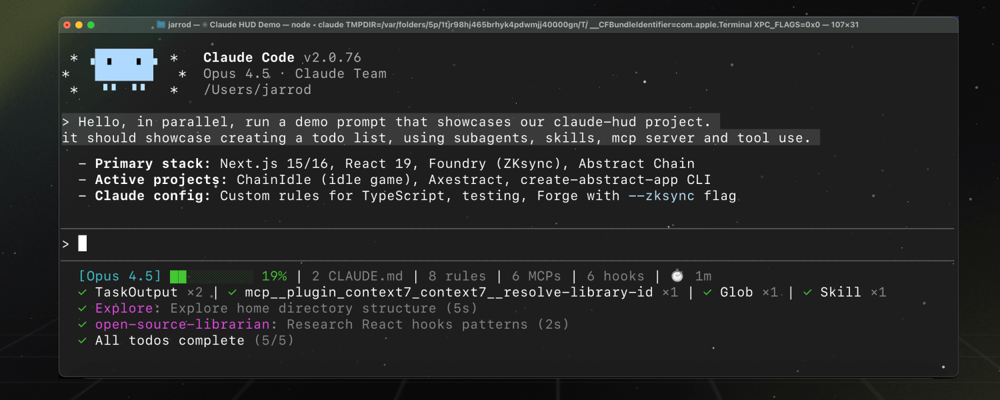

Getting Started
Install Claude HUD and get it running in under a minute. This guide walks you through prerequisites, installation, first-run configuration, and verifying that everything works.
Prerequisites:
- Claude Code v1.0.80 or later
- Node.js 18+ or Bun
Parent topic: Overview
Quick Install
Claude HUD installs entirely from within Claude Code. Open a terminal with Claude Code running, then follow these three steps.
Step 1: Add the Marketplace
Register the Claude HUD marketplace source so Claude Code knows where to find the plugin:
/plugin marketplace add jarrodwatts/claude-hud
This is a one-time operation. Once added, the marketplace persists across sessions.
Step 2: Install the Plugin
/plugin install claude-hud
Claude Code downloads the latest release, compiles it, and registers it as a statusline plugin.
Linux users: If you see
EXDEV: cross-device link not permitted, your/tmpis on a separate filesystem (common with tmpfs). Fix it by launching Claude Code with a local temp directory:mkdir -p ~/.cache/tmp && TMPDIR=~/.cache/tmp claudeThen run
/plugin install claude-hudinside that session. This is a Claude Code platform limitation, not specific to Claude HUD.
Step 3: Configure the Statusline
/claude-hud:setup
This command registers the HUD as your active statusline in ~/.claude/settings.json. The HUD appears immediately — no restart needed.
What You Should See
After setup, a statusline appears below your Claude Code input. The default view shows two lines:

[Opus | Max] | my-project git:(main*)
Context █████░░░░░ 45% | Usage ██░░░░░░░░ 25% (1h 30m / 5h)
- Line 1 — Model name, plan tier (or
Bedrock), project path, and git branch - Line 2 — Context usage bar (color-coded) and rate limit consumption
The context bar changes color as your session fills up:
| Context Usage | Color | Meaning |
|---|---|---|
| 0–70% | Green | Healthy — plenty of room |
| 70–85% | Yellow | Warning — consider wrapping up soon |
| 85%+ | Red | Critical — token breakdown displayed |
If your HUD does not appear, jump to the Troubleshooting guide.
Choose a Preset
Run the interactive configurator to pick a display preset:
/claude-hud:configure
Three presets control how much information the HUD shows:
| Preset | Lines | What’s Shown |
|---|---|---|
| Full | Up to 5 | Everything — tools, agents, todos, git, usage, duration |
| Essential | 3 | Activity lines + git status, minimal clutter |
| Minimal | 2 | Core only — model name and context bar |
After choosing a preset, the configurator lets you toggle individual elements on or off. Your choices are saved to ~/.claude/plugins/claude-hud/config.json.
Preset Examples
Full preset — all lines enabled:
[Opus | Max] | my-project git:(main*)
Context █████░░░░░ 45% | Usage ██░░░░░░░░ 25% (1h 30m / 5h)
◐ Edit: auth.ts | ✓ Read ×3 | ✓ Grep ×2
◐ explore [haiku]: Finding auth code (2m 15s)
▸ Fix authentication bug (2/5)
Minimal preset — just the essentials:
[Opus] | my-project git:(main)
Context █████░░░░░ 45%
Enable Optional Lines
By default, only the session info and context bar are visible. Three additional lines can be enabled:
Tools Activity
Shows which tools Claude is using right now and a summary of recent tool calls:
◐ Edit: auth.ts | ✓ Read ×3 | ✓ Grep ×2
Enable with:
{ "display": { "showTools": true } }
Agent Tracking
Shows running subagents with their model, task description, and elapsed time:
◐ explore [haiku]: Finding auth code (2m 15s)
Enable with:
{ "display": { "showAgents": true } }
Todo Progress
Tracks task completion from TodoWrite calls in real time:
▸ Fix authentication bug (2/5)
Enable with:
{ "display": { "showTodos": true } }
These lines only appear when there is activity to display. When idle, they hide automatically to keep the HUD clean.
Edit the Config File Directly
For settings not covered by the interactive configurator — such as custom colors, path depth, or cache timing — edit the config file directly:
# Open the config file in your editor
$EDITOR ~/.claude/plugins/claude-hud/config.json
A minimal example that enables all activity lines with custom colors:
{
"lineLayout": "expanded",
"pathLevels": 2,
"display": {
"showTools": true,
"showAgents": true,
"showTodos": true,
"showDuration": true
},
"colors": {
"context": "cyan",
"usage": "brightBlue",
"warning": "yellow",
"critical": "red"
}
}
Running /claude-hud:configure later preserves any manual settings you have added.
For the full list of configuration options, see the Configuration reference.
Verify the Installation
After setup, confirm everything works:
1. Check the plugin is registered:
/plugin list
You should see claude-hud in the output.
2. Check the statusline config:
The /claude-hud:setup command adds a statusLine entry to ~/.claude/settings.json. You can verify it exists:
cat ~/.claude/settings.json | grep statusLine
3. Test with sample data (advanced):
If you want to test the plugin outside of Claude Code, pipe JSON to the built binary:
echo '{"model":{"display_name":"Opus"},"context_window":{"current_usage":{"input_tokens":45000},"context_window_size":200000}}' | node ~/.claude/plugins/claude-hud/dist/index.js
You should see a rendered statusline in your terminal.
Usage Limits Display
If you have a Claude Pro, Max, or Team subscription, the HUD shows your rate limit consumption alongside context usage. This is enabled by default.
Context █████░░░░░ 45% | Usage ██░░░░░░░░ 25% (1h 30m / 5h)
When your 7-day usage exceeds the configured threshold (default 80%), that also appears:
Context █████░░░░░ 45% | Usage ██░░░░░░░░ 25% (1h 30m / 5h) | ██████████ 85% (2d / 7d)
Requirements for usage display:
- A Claude Pro, Max, or Team subscription (not API-key users)
- OAuth credentials from Claude Code (created automatically on login)
Not seeing usage data? Check these common causes:
- You are logged in with an API key instead of OAuth — usage display requires a subscription
display.showUsageis set tofalsein your config- You are using AWS Bedrock — usage is managed in AWS, not shown in the HUD
- A custom
ANTHROPIC_BASE_URLis set — the Anthropic OAuth usage API may not apply - You are behind a proxy — set
HTTPS_PROXY(orHTTP_PROXY/ALL_PROXY) - For slow networks, increase the timeout with the
CLAUDE_HUD_USAGE_TIMEOUT_MSenvironment variable
Updating Claude HUD
To update to the latest version, run:
/plugin install claude-hud
The /claude-hud:setup command configures an auto-updating path, so you do not need to re-run setup after updating. The next time Claude Code starts, it picks up the new version automatically.
Uninstalling
To remove Claude HUD:
1. Remove the plugin:
/plugin uninstall claude-hud
2. Remove the statusline config (optional):
Edit ~/.claude/settings.json and delete the statusLine entry, or set it to null.
3. Remove the config file (optional):
rm ~/.claude/plugins/claude-hud/config.json
Next Steps
- Configuration — Full reference for every setting, color, and layout option
- HUD Elements — Understand every line, bar, and indicator in the display
- Troubleshooting — Fix common issues with installation, display, and platform quirks